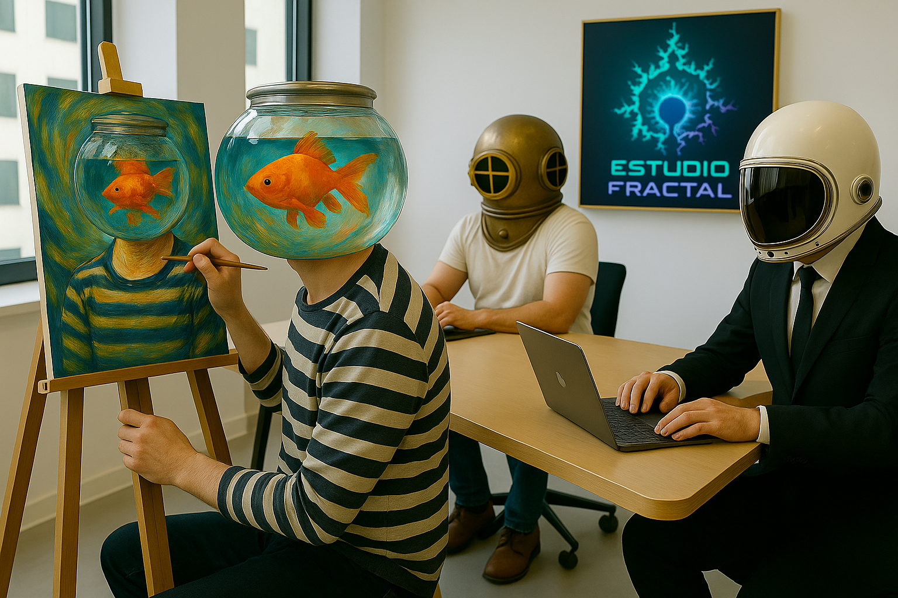

Sobre Nosotros: La Fusión de Arte y Tecnología
En Estudio Fractal, somos un colectivo de mentes creativas y técnicas apasionadas por explorar la infinita convergencia entre el arte digital y las soluciones tecnológicas de vanguardia. Nacimos de la convicción de que la tecnología puede ser una extensión del lienzo del artista y que el código puede componer sinfonías visuales y funcionales.
Nuestra Filosofía
Nuestra misión es trascender los límites convencionales, ofreciendo productos y servicios que no solo resuelven problemas, sino que también inspiran y deleitan. Creemos firmemente en el poder de las ideas originales y en la personalización como pilares fundamentales para cada proyecto exitoso. Cada desafío es una oportunidad para innovar, para tejer la lógica de la programación con la intuición del diseño artístico.
Nos movemos en los márgenes, donde la experimentación es la norma y la creatividad es la brújula. Desde el desarrollo de software a medida hasta la creación de contenido digital y artístico que cuenta historias, cada pieza que producimos es un reflejo de nuestra dedicación a la excelencia y la originalidad.
¿Qué nos hace diferentes?
- Visión Holística: Integramos arte y tecnología desde la concepción de la idea, no como componentes separados.
- Enfoque Personalizado: Cada cliente y proyecto es único. Escuchamos, entendemos y co-creamos soluciones que se alinean perfectamente con tus objetivos.
- Independencia Creativa: Nuestro espíritu independiente nos otorga la agilidad para adaptarnos y la libertad para proponer soluciones audaces y fuera de lo común.
- Compromiso con la Calidad y Agilidad: No sacrificamos la calidad por la velocidad, pero nuestra estructura flexible nos permite ofrecer tiempos de entrega competitivos y eficientes.
Si buscas un socio que hable fluidamente los lenguajes del arte y la tecnología, que entienda tus necesidades y las traduzca en realidades impactantes y funcionales, has llegado al lugar correcto. En Estudio Fractal, estamos listos para dar forma a tu próxima gran idea.